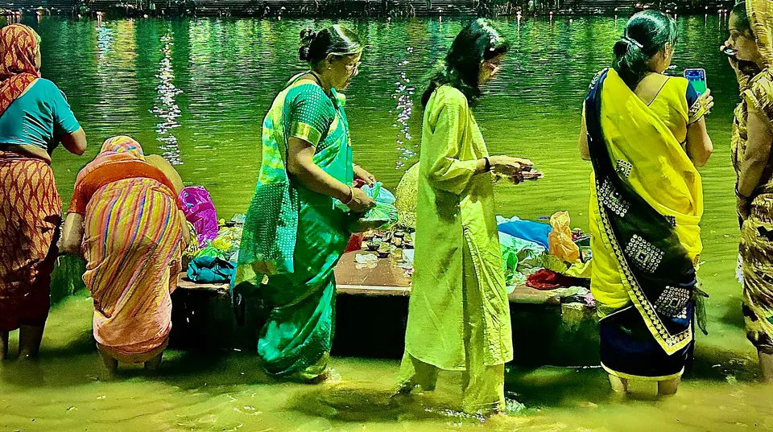

Ujjain in November 2026: Kartik, Diwali and Hari-Har Milan

November 2026 is a festival month in Ujjain: Diwali falls on Sunday, 8 November, Hari-Har Milan is expected on 23 November, and Kartik Purnima on 24 November. Mahakal darshan continues as usual through all of it, so the real planning question is which of these days you want to be here for.
We have hosted pilgrim families in Ujjain since 2023, and November is the month many of them ask us about. The weather turns kind, the Shipra ghats fill with lamps, and the city has a quiet devotional rhythm. A little planning around the crowded days makes it gentler for your parents and children.
Key dates for Ujjain in November 2026
Dates below come from the sources listed at the end. Different panchangs can differ by a day, so please confirm with your pandit ji or a local Ujjain panchang.
- 6 November: Dhanteras. 7 November: Choti Diwali. 8 November (Sunday): Diwali, on the night of Kartik Amavasya. 9 November: Govardhan Puja. 10 November: Bhai Dooj (SmartPuja).
- 23 November (Monday): Vaikuntha Chaturdashi, the day of Hari-Har Milan, per Hindu Tone. Panchangs can differ by a day, so confirm locally.
- 24 November (Tuesday): Kartik Purnima, per Haindavam. The observed day may vary by panchang.
Diwali week in Ujjain
The date of Diwali is settled across sources, 8 November, but the Lakshmi Puja muhurat differs between websites by up to an hour, and it also depends on the city. We will not quote one. Your family pandit ji or the temple you attend will give the correct time for Ujjain.
What to expect
Families travel for Diwali, so trains, roads and the lanes near the temple are busier. We cannot give crowd numbers, and nobody should invent them. Plan your Mahakal darshan for an early hour, keep the afternoon for rest, and light your own diya in the evening wherever you are staying.
If you are travelling with children, a villa helps on Diwali night: you can celebrate together in your own space rather than in a restaurant dining room.
Kartik month: lamps, early baths and a quieter devotion
Kartik is regarded as a month of deepdaan (lighting lamps) and river bathing. The Hindu Tone guide says devotees light earthen lamps with ghee or sesame oil, especially in the Brahma Muhurta, at temples, beside the Tulsi plant and by rivers. It describes Ram Ghat as the main bathing site on the Shipra, with bathing before sunrise and an evening Shipra aarti. That article is about 2025, so treat it as the usual pattern and not as the 2026 timetable.

A word on the morning bath
Mornings in late November can be cool, and ghat steps can be wet and slippery. If your parents wish to bathe, go with a family member, carry a dry towel and shawl, and keep the plan simple. Many families prefer to sprinkle Shipra water and offer a lamp instead, which is just as sincere.
Hari-Har Milan: when Shiva and Vishnu meet
Hari-Har Milan means the meeting of Hari (Vishnu) and Hara (Shiva). As Hindu Tone tells it, Vishnu rests during Chaturmas while Shiva looks after creation, and after Vishnu wakes, Shiva hands the care of the universe back to him. The two deities exchange garlands, a bilva (bilwapatra) garland for Vishnu and a tulasi garland for Shiva.
In Ujjain this is the best-known celebration of Vaikuntha Chaturdashi. The Free Press Journal described a procession in 2019 that began at 11 PM from the Mahakaleshwar temple and went through Gudri Square and Patni Bazaar to Gopal Mandir, where the garlands were exchanged before the procession returned. That is a past report, not the 2026 programme. The same report mentions that the administration had banned hingot (the traditional fireball play) and fireworks yet crowds still lit crackers, so keep children close and stay clear of crowded lanes.
Planning for the night
- Check the route and time on the official Shri Mahakaleshwar portal and local announcements closer to the date.
- Watch from a comfortable distance, not the thick of the crowd, especially with elders.
- Rest in the afternoon. A late night followed by a 4 AM Bhasma Aarti is too much for most families, so choose one.
Kartik Purnima on the Shipra
Kartik Purnima is the high point of the month. The Hindu Tone guide says thousands of devotees gather at the Shipra ghats on this day, with bathing timed to moonrise and thousands of diyas lit at the temple and along the riverbanks. For 2026 the date is most likely 24 November. Please confirm the muhurat with a local panchang.
Our honest advice for Purnima: go to the ghat in the early evening, not at the busiest hour, keep your group small, and agree on a meeting point in case anyone is separated.
Mahakal darshan and the winter Bhasma Aarti timing
The Hindu Tone guide says the Bhasma Aarti starts about half an hour later in the winter season, from Kartik to Falgun, at around 4:30 AM against 4:00 AM earlier in the year. Booking is online and a photo ID is needed. The temple can change these rules, so use the official portal as your final word. Our complete Mahakaleshwar guide covers the booking steps, dress code and what to carry.
Festival weeks change queues for ordinary darshan too. Plan one main darshan per day with your parents, and rest in between. If you are also visiting Devi temples, our Navratri in Ujjain guide explains Harsiddhi Mata and how families combine temples.
Other places for a gentle second day
Gopal Mandir is the Krishna temple at the heart of Hari-Har Milan, and Ujjain Darshan lists its hours as 6:00 AM to 10:00 PM, though that is a commercial guide and may not be current. For other temples, see our ten sacred places in Ujjain beyond Mahakaleshwar, and our travel page for cabs and tempo traveller options.
Practical tips for a November visit
- Mornings and evenings are cool, so carry a shawl for elders and a light jacket for children.
- Book your stay and travel early for Diwali week and for 23 to 24 November, when we expect more families.
- Keep footwear easy to remove, and carry small cash for prasad and lamps.
- Carry the original photo ID used at registration if you have a Bhasma Aarti permit.
- Allow extra time in the evenings, when the city is busiest.
Where to stay near Mahakaleshwar for a November trip
All five AP Villas are within 2 km of Mahakaleshwar Jyotirlinga, about 6 minutes by car or 12 minutes on foot, with a complimentary Mahakal shuttle for in-house guests. For a festival-month trip, the newest of our homes is where we would send you first.

Rudrangan Suites: a calm base after a long festival day
Rudrangan Suites opened in 2026 with designer finishes, premium linens and garden seating for quiet evenings after the Shipra aarti. It has 3 bedrooms and sleeps 6, from ₹5,200 per night. There is a lift and the stay is wheelchair friendly, which matters when grandparents are travelling, and pets are welcome. The kitchen has an induction cooktop, microwave and mini fridge, so you can cook satvik meals and Diwali sweets at home. Geysers and power backup are provided, handy for cool Kartik mornings. Check-in is 10:30 AM and check-out 9:30 AM, and a later check-out can be arranged on request, subject to availability.
If your group is larger
- Divinestay: 3 bedrooms, sleeps 8, from ₹5,500 per night, with a private rooftop.
- Om Shanti Stay: 2 bedrooms, sleeps 6, from ₹4,500 per night.
- AP Suite: 2 bedrooms, sleeps 4, from ₹4,200 per night.
Our caretaker explains the Bhasma Aarti booking process on your arrival evening, and the shuttle drops you at the temple gate by 3:30 AM for the 4 AM aarti. Since the winter timing may be later, we confirm the current time with you. See all five on our villas page. Festival dates may carry different cancellation terms, which we confirm on WhatsApp.
Frequently asked questions
When is Diwali in 2026, and is Ujjain worth visiting then?
Diwali 2026 falls on Sunday, 8 November, on the night of Kartik Amavasya, with Dhanteras on 6 November and Bhai Dooj on 10 November. Ujjain is lovely in this week, with lamps across the city, but crowds and travel are heavier. Book early and keep your darshan plan light.
When is Hari-Har Milan in Ujjain in 2026?
Hindu Tone places Vaikuntha Chaturdashi, the day of Hari-Har Milan, on Monday, 23 November 2026, and the ritual is held at night. Panchangs can differ by a day, and the procession time is announced locally. Please check the Mahakaleshwar temple site or your local panchang before planning around it.
When is Kartik Purnima 2026 and where do people bathe in Ujjain?
Most sources give Tuesday, 24 November 2026 for Kartik Purnima. Devotees bathe in the Shipra at ghats such as Ram Ghat, usually before sunrise. If bathing is part of your vow, confirm the day with your pandit ji and go early with elders.
Does the Bhasma Aarti time change in Kartik?
Hindu Tone says the Bhasma Aarti shifts about half an hour later in the winter season, from Kartik to Falgun, to around 4:30 AM instead of 4:00 AM. Timings are set by the temple and can change, so confirm on the official Shri Mahakaleshwar portal before you travel.
Can we cook our own satvik meals during a November visit?
Yes. Every AP Villas property has a full modular kitchen with microwave and cookware, and Rudrangan Suites has an induction cooktop too. A local cook can also be arranged for simple home-style thalis on request. Tell us your needs when you message, and see our contact page for more.
Sources
- Hindu Tone: Vaikuntha Chaturdashi 2026 and Hari-Hara Milan
- Free Press Journal: Hara meet Hari on Vaikunth Chaturdashi (2019 report)
- Hindu Tone: how Ujjain celebrates Karthika Masam (2025 guide)
- Haindavam: Kartika Purnima 2026 (Ujjain)
- SmartPuja: Diwali 2026 date
- Ujjain Darshan: Gopal Mandir
- Shri Mahakaleshwar temple: official portal
Timings, prices and dates change, especially on festival days. Please verify before you travel with the official temple or government site.
If Diwali or Kartik Purnima is calling your family to Ujjain, write to us and we will tell you honestly what is available and how to plan the days.
— Apoorv, Founder, AP Villas & Resorts